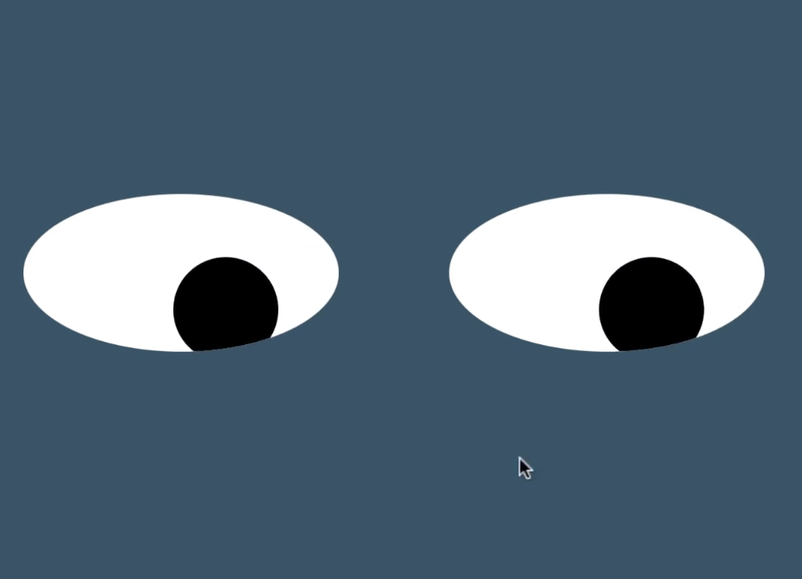
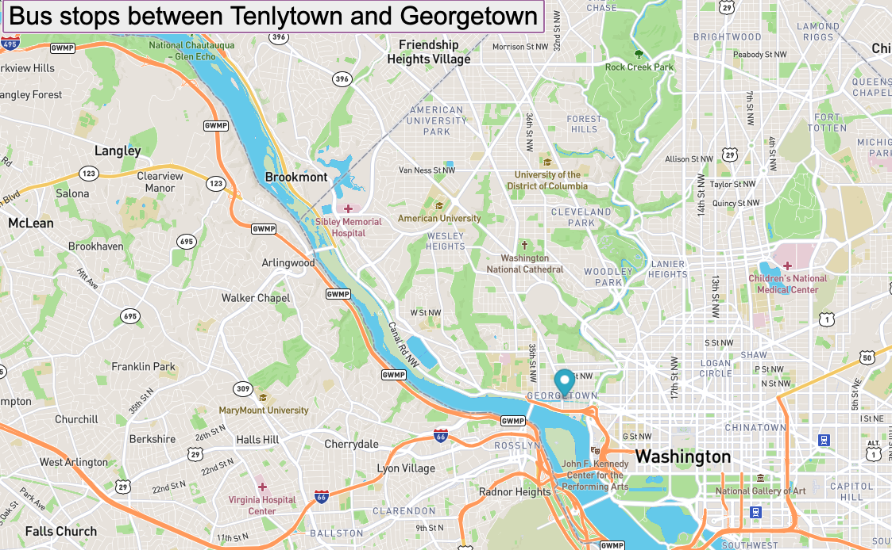

pacMen
This project allows the user to create not just a PacMan, but pacMen! The pacMen then bounce across the screen with the help of JavaScript.

eyeMovement
This project uses JavaScript and CSS to create shapes that resemble a pair of eyes that move with the movement of the mouse on the DOM.

busTracker
This project uses JavaScript to move a marker on a map to show the metrobus stops between Tenlytown and Georgetown in Washington, DC.
atmMachine
Atm machine.